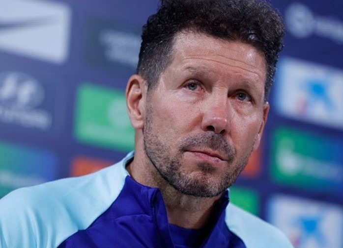
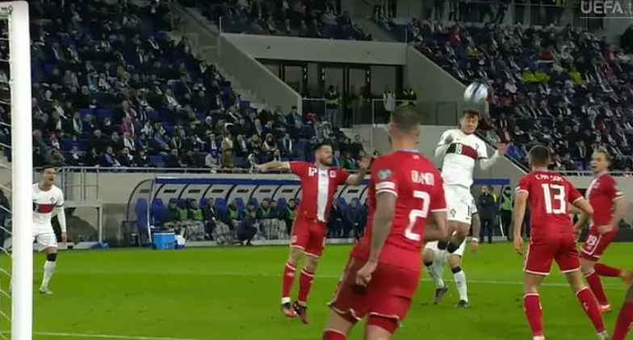

DEPORTES
Ver Más >
PERÚ
Alianza Lima y el sorprendente lugar que ocupa en la tabla de valores de mercado de la Copa Libertadores

ESPAÑA
Atlético de Madrid: Simeone "Los grandes equipos necesitan de grandes delanteros"
BRASIL
Brasil campeón: la tabla de posiciones del hexagonal en el Sudamericano Sub-17

PORTUGAL
Patidos de clasificación Eurocopa 2024 del 26 de marzo: resumen, resultado y goles